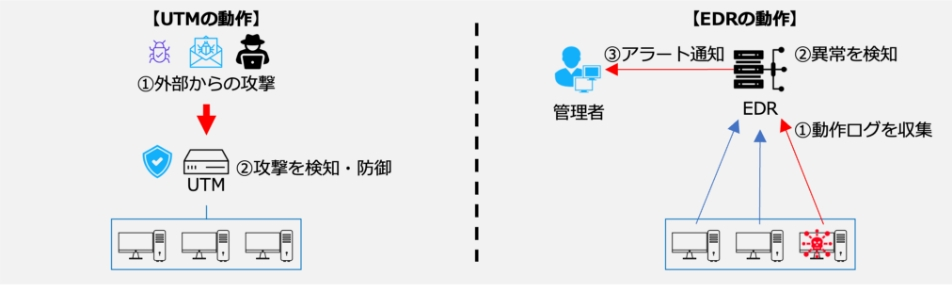

19-2-3. 第3章. サイバーセキュリティの基礎知識
- 3-1. 導入済と想定するセキュリティ対策機能
- 3-2. 各種資格試験から得るサイバーセキュリティの基礎知識
- 3-3. Security Action（セキュリティ対策自己宣言）
- 3-4. サイバーセキュリティアプローチ方法
章の目的
第3章では、サイバーセキュリティの基本的な知識や対策などについて振り返りつつ、自社のリスク状況や活用可能なリソースを考慮した、脅威に対する最適な対処方法を明確にすることを目的とします。
主な達成目標
- UTM、EDRの機能を再確認すること。
- サイバーセキュリティに関する基礎知識を身につける方法を確認すること。
- 企業が自ら実施できる基本的なセキュリティ対策を再確認すること。
- リスクと活用可能なリソースを考慮した脅威への対処方法を理解すること。
主なキーワード
UTM、EDR、情報処理技術者試験、SECURITY ACTION
要旨
3章の全体概要
UTM、EDRの機能や、ITやセキュリティに関する網羅的な知識の取得状況を確認するために有効な情報処理技術者試験を紹介しています。中小企業がセキュリティ対策を進めるにあたり、SECURITY ACTION（セキュリティ対策自己宣言）に取組むことを推奨します。その後、サイバーセキュリティの脅威に対処するための3つの段階的なアプローチ手法を用いて対策を進めましょう。
3-1.導入済と想定するセキュリティ対策機能
UTM、EDRの機能について振り返ります。
図75. UTM・EDRの概要図
3-2. 各種資格試験から得るサイバーセキュリティの基礎知識
ITやセキュリティの知識を身につけることは重要です。従業員一人ひとりがITやセキュリティの知識を身につけることで、組織の安全な運営や、組織のセキュリティレベルの向上に繋がります。ITやセキュリティに関する網羅的な知識の取得状況を確認するために、情報処理技術者試験などを受験するとよいでしょう。
- ITパスポート試験（IP）
- 情報セキュリティマネジメント試験（SG）
- 基本情報技術者試験（FE）
3-3. Security Action（セキュリティ対策自己宣言）
「SECURITY ACTION」に取組むことで、一つ星・二つ星を宣言でき、従業員のセキュリティに対する意識や対外的な信頼の向上に繋がります。一つ星・二つ星を宣言するには、次の事項に取組む必要があります。
- 情報セキュリティ5か条
- 5分でできる！情報セキュリティ自社診断
- 情報セキュリティ基本方針
3-4. サイバーセキュリティアプローチ方法
サイバーセキュリティの脅威に対処するために、段階的なアプローチ手法をとることが重要です。自社が直面しているリスク状況および活用できるリソースを考慮し、最適なアプローチ手法を選択することが大切です。
- LV1. クイックアプローチ
- LV2. ベースラインアプローチ
- LV3. 網羅的アプローチ
訴求ポイント
章を通した気づき・学び
ITや情報セキュリティの知識を身につけ、企業内外でセキュリティ専門の人材と協力できるようになることが大切です。セキュリティ対策をはじめるにあたり、SECURITY ACTIONに取組み、従業員の意識を高め、対外的な信頼を向上させることが大切です。
認識していただきたい実施概要
- ITやセキュリティに関する網羅的な知識の取得状況を確認するために、情報処理技術者試験などを受験することが有効であること。
- 中小企業が情報セキュリティ対策に取組むことの宣言として「SECURITY ACTION」という制度があり、従業員の意識を高め、対外的な信頼を向上させるために有効であること。
- サイバーセキュリティの脅威に対処するためには、効果的な3段階のアプローチがあること。
実践のために参考となる文献（参考文献）